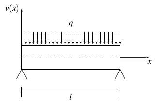
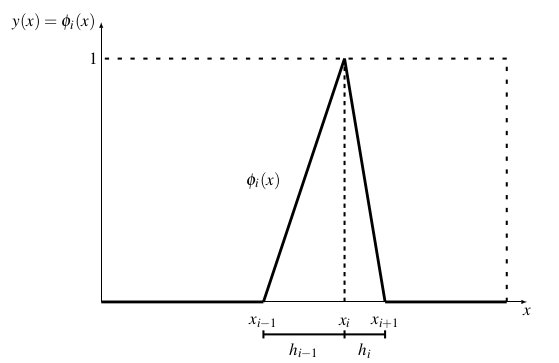

Um dos objetivos do cálculo variacional é encontrar uma função \(y(x)\) que, dentre as funções admissíveis torna o funcional estacionário. Uma das formas para se encontrar a função \(y(x)\) é encontrando a Equação de Euler-Lagrange, ver e do , associada ao problema e, então, resolvê-la.
A resolução de equações diferenciais e a determinação da solução exata por meio das condições de contorno do problema é, entretanto, uma tarefa trabalhosa e, em muitos casos, até não factível. Para se esquivar de problemas como esses, surgem alguns métodos, dentre os quais está o método de Rayleigh-Ritz.
As explicações e os conceitos aqui utilizados foram elaboradas tomando como referências os autores \citeonline{mefassan} e \citeonline{MRR_Deflex}.
O método de Rayleigh-Ritz propõe que a função \(y(x)\), exata, seja substituída por uma função aproximada \(v(x)\) que é formada pela combinação linear de funções \(\phi _i(x)\). Uma das vantagens do uso do método é que ele não requer que as condições de contorno naturais sejam satisfeitas \cite{GROSSI_2001}. Deste modo, o método é empregado principalmente em problemas onde as condições de contorno naturais são de difícil resolução.
Considerando o funcional
Substituindo \(y\) por \(v\) no funcional, \(I\) passa a ser uma função de \(a_1\), \(a_2\), \(\dots\), \(a_n\), isto é, \(I=I(a_1, a_2, \dots, a_n)\). A condição de máximo ou mínimo para o funcional \(I\) é, então, que as suas derivadas parciais em relação a \(a_1\), \(a_2\), \(\dots\), \(a_n\) se anulem, ou seja
\cite{mefassan} A viga prismática da Figura 3.1 possui o funcional de energia potencial total associado

Utilize o método o método de Rayleigh-Ritz para aproximar a função exata \(v(x)\) através de funções polinomiais de grau 2, 3 e 4 de modo que o funcional se torne estacionário.
É possível encontrar uma função que aproxime a função exata \(v(x)\) tornando o funcional estacionário utilizando o método de Rayleigh-Ritz. Esse processo será feito utilizando três funções aproximadoras:
Para parâmetro de comparação com os resultados apresentados pelas funções \(v_1(x)\), \(v_2(x)\) e \(v_3(x)\) definidas em , e , será utilizado o valor de máxima deflexão da Viga da Figura 3.1. Esse valor foi determinado no Apêndice \ref{apend:max_deflex}, em , como
Como primeira aproximação, pode-se utilizar a função \(v_1(x)=a_0+a_1x+a_2x^2\), de onde, considerando as condições de contorno essenciais, tem-se que \(v_1(0)=0\), levando a \(a_0=0\), e de \(v_1(l)=0\), concluindo que \(a_1=-a_2l\). Assim, a função é escrita como
Sua derivada é \(v_1'(x)=a_2(2x-l)\) e, a derivada de segunda ordem é \(v_1''(x)=2a_2\). Substituindo esses valores no funcional , tem-se que
Da condição de estacionariedade tem-se, que \(\dfrac{\partial \Pi}{\partial a_2} = 0\) e, consequentemente
Com o valor de \(a_2\) conhecido, é possível determinar o valor de \(a_1=-a_2l\), resultando em
Assim, a função aproximadora \(v_1\) pode ser escrita como
Calculando \(v_1(\frac{l}{2})\) a título de comparação com o valor exato de máxima deflexão da viga, dado por ,
Note que há uma grande diferença entre o valor encontrado pela função \(v_1(x)\), , e o valor exato, . Visando uma melhoria nessa aproximação, faz-se necessário o uso da função definida \(v_2(x)=a_0+a_1x+a_2x^2+a_3x^3\). Das condições de contorno essenciais, \(v_2(0)=0\), de onde \(a_0=0\), e \(v_2(l)=0\), isolando \(a_1=-a_2 l - a_3 l^2\). Assim, a função \(v_2(x)\) é
Derivando a função \(v_2\) em função de \(x\), duas vezes, pode-se obter
Substituindo e em \(\Pi\), tem-se
Derivando \(\Pi\) em função de \(a_2\) é possível obter
Derivando \(\Pi\) em relação a \(a_3\) tem-se que
Montando um sistema de equações com e :
Subtraindo as equações em , tem-se
Consequentemente,
Assim, a função \(v_2(x)\) é a mesma que \(v_1(x)\), não permitindo uma melhoria na aproximação desejada, sendo, portanto, inútil para esse caso. Ainda, visando melhor aproximação, deve-se passar para a próxima função aproximadora escolhida, \(v_3(x)\).
Utilizando a função \(v_3(x)=a_0+a_1x+a_2x^2+a_3x^3+a_4x^4\), tem-se das condições de contorno essensiais que \(v_3(0)=0\), donde \(a_0=0\) e, \(v_3(l)=0\), isto é \(a_1l+a_2l^2+a_3l^3+a_4l^4=0\), donde pode-se concluir que \(a_1=-a_2l-a_3l^2-a_4l^3\). Substituindo \(a_0\) e \(a_1\) em \(v_3(x)\), podemos encontrar a função
Derivando \(v_3\) em relação a \(x\), duas vezes:
Substituindo e em \(\Pi\),
Fazendo \(\dfrac{\partial \Pi}{\partial a_2} = 0\):
Fazendo \(\dfrac{\partial \Pi}{\partial a_3} = 0\), tem-se
Por último, fazendo \(\dfrac{\partial \Pi}{\partial a_4}=0\), tem-se
É obtido, assim, um sistema linear de 3 equações em 3 incógnitas, com , e :
Chamando \(C=-\dfrac{ql^2}{12EI}\) e \(D=-\dfrac{3ql^2}{10EI}\), tem-se a matriz aumentada do sistema linear .
Deste modo, substituindo , e em , a função \(v_3(x)\) é escrita como
Utilizando os três valores, , e , da solução do sistema linear com matriz aumentada , é possível determinar o coeficiente \(a_1=-a_2l-a_3l^2-a_4l^3\), que é
Não há, de fato, necessidade para a obtenção do valor do coeficiente \(a_1\), pois \(v_3(x)\) foi escrita de forma independente de \(a_1\) em . Este apenas foi feito para que a função \(v_3(x)\) possa ser escrita, a partir de , como
O valor de máxima deflexão, \(v_3(\frac{l}{2})\) é dado por
A função \(v_3(x)\), apresentada em , no , é a função exata procurada. A escolha correta das funções de forma para a construção da função aproximadora é de suma importância para um bom resultado no método de Rayleigh-Ritz. Existem alguns critérios de convergência, que não serão tratados aqui devido sua complexidade, porém, ainda com os critérios de convergência a escolha das funções aproximadoras é uma tarefa que envolve tentativas e erros até que o resultado seja satisfatório.
Por exemplo, o funcional do tem sua função \(v(x)\) exata conhecida, do Exemplo , facilitando, desta forma, a escolha das funções de forma. Como a função exata \(v(x)\) é uma função polinomial de grau 4, a escolha da função aproximadora como uma função polinomial foi bem prática.
Devido a função exata \(v(x)\) ser uma função polinomial de grau 4, caso a função aproximadora escolhida, no , não fosse uma função polinomial de grau 4 ou superior, dificilmente a mesma se tornaria a função exata no método de Rayleigh-Ritz.
\citeonline{MRR_Deflex} apresentam o uso de funções triangulares como funções de forma, visando a discretização da função \(y(x)\). Considere o funcional

Observe que, de acordo com a definição das funções de forma \(\phi_i(x)\), a função \(v(x)\), definida como combinação linear das \(\phi_i(x)\), funcionará apenas para funcionais que dependem apenas de derivadas de primeira ordem, visto que a derivada de segunda ordem de qualquer \(\phi_i(x)\) é nula.
A primeira derivada das funções \(\phi_i(x)\) em relação a \(x\) é escrita como
Aproximando \(y(x)\) por meio da função \(v(x)\) definida em , o funcional é escrito como
Para determinar os coeficientes \(a_j\), as derivadas parciais de em relação aos \(a_j\) devem ser todas nulas, ou seja,
Em foi utilizado o fato de que a derivada de \(\displaystyle \sum_{i=1}^{n} a_i \phi_i(x)\) em relação a algum \(a_j\), onde \(1\leqslant j\leqslant n\), resulta em \(\phi_j(x)\). O mesmo vale para a derivada de \(\displaystyle \sum_{i=1}^{n} a_i \phi_i'(x)\) em relação a algum \(a_j\), \(1\leqslant j\leqslant n\), que resulta em \(\phi_j'(x)\).
Aplicando a distributividade na primeira e segunda parcela do integrando em , tem-se
De , como \(a_i\) é constante na integração em relação a \(x\), tem-se
Chamando
A partir de e , os produtos \(\phi_i(x)\phi_j(x)\) e \(\phi_i'(x)\phi_j'(x)\) são não nulos apenas quando \(i=j-1\), \(i=j\) e \(i=j+1\). Consequentemente, \(m_{j,i}\) é não nulo apenas para \(i=j-1\), \(i=j\) e \(i=j+1\).
A construção do sistema \(M\cdot A=B\) e sua resolução, pelo método de Gauss-Jordan, serão implementado na linguagem de programação \textit{Python} na Seção \ref{sec:python_triangular} do Capítulo \ref{cap:python}.